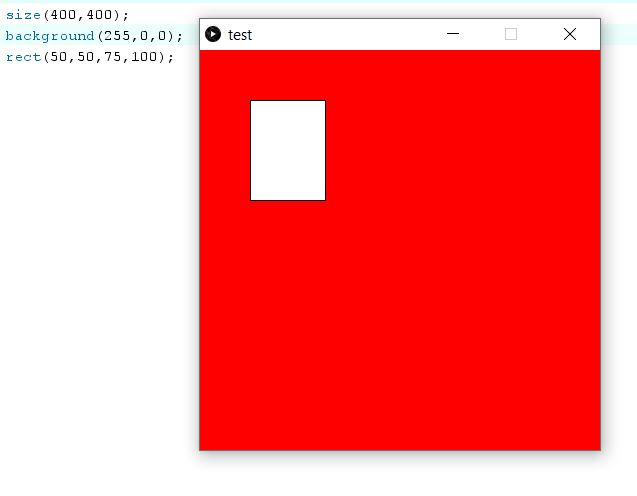
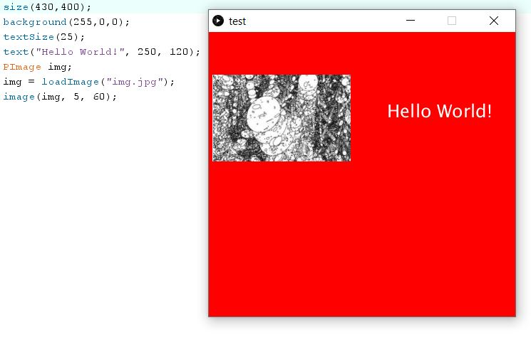
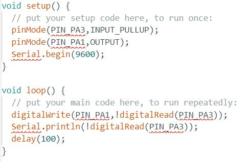

Interface and applications programming.
This documents the integration of microcontrollers with computers to display more meaningful data.
Processing
Processing is a software that allows to program graphical displays and interface with serial ports.
The size function creates a display window.
Shapes can be drawn by defining the size and coordinates of the shape. A circle is drawn.
A rectangle is drawn.
The background colour can be set with a single value, 255 being white and 0 being black. Other values would be a shade of grey in-between white and black.
RGB colours can also be defined. Red is set to 255, green and blue are both 0. The background colour would be red.
Text can be added. The font size is defined and the text string and position are defined.
An image can be used by using the PImage class. The image needs to be loaded before it is used.
setup() runs once while draw() runs 60 times a second.
Circles are drawn at the mouse location 60 times a second.
Download program
Interfacing with microcontrollers
"processing.serial.*" is imported and a new "Serial" object is created. The serial port is connected at the same baud rate set in the Arduino program.
This is the draw() routine. The Serial port is checked to see if there is a "0" or a "1". If it is, the image and text is updated.
This is the Arduino program. The hardware serial interface is used on the ATtiny412.
This is the program running.
Download processing program Download Arduino program